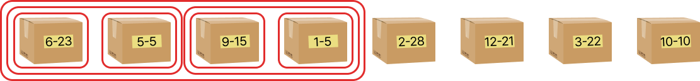

날짜 라벨이 붙어 있는 상자를 순서대로 정리한 방법도 정렬 알고리즘일까?
퀵 정렬은 분할 정복 전략을 활용한 정렬 알고리즘이다. 이처럼 분할 정복 전략이 적용된 또 다른 예시로는 날짜 라벨이 붙어 있는 상자를 순서대로 정리한 문제의 해결 방법을 들 수 있다.

상자를 순서대로 정리하기 위해 계속 반으로 나누고, 이들을 정렬한 뒤, 다시 합치는 과정을 거쳤다. 이 과정을 병합 정렬 알고리즘이라고 한다. 병합 정렬 알고리즘은 분할 정복 전략의 특징을 가지로 있어 데이터가 많아져도 성능이 우수하다는 장점이 있다. 퀵 정렬 역시 분할 정복 전략을 기반으로 하지만 피벗의 위치가 나쁘면 최악의 성능을 보일 수 있다. 반면, 병합 정렬은 데이터를 항상 반으로 나누어 분할하므로 안정적인 성능을 유지한다.